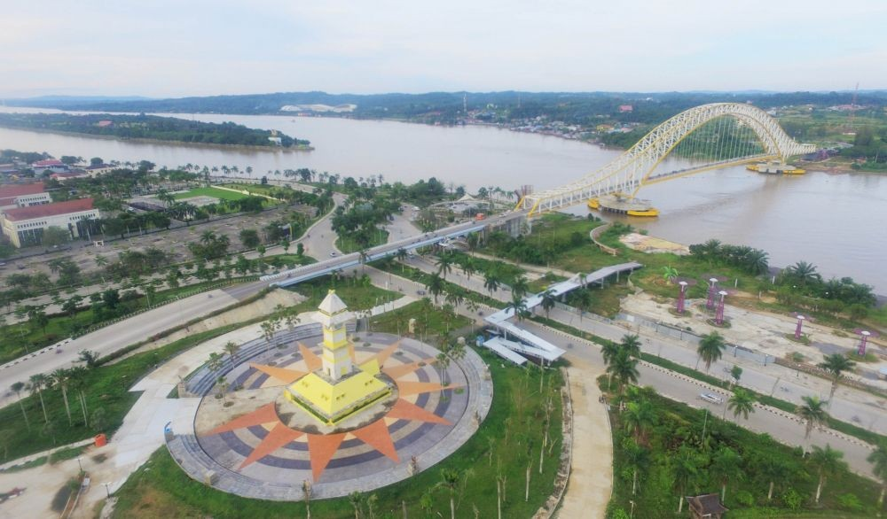
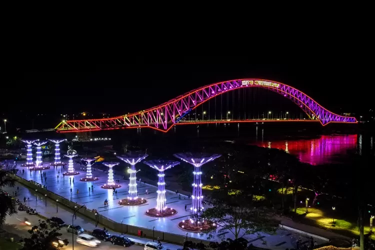
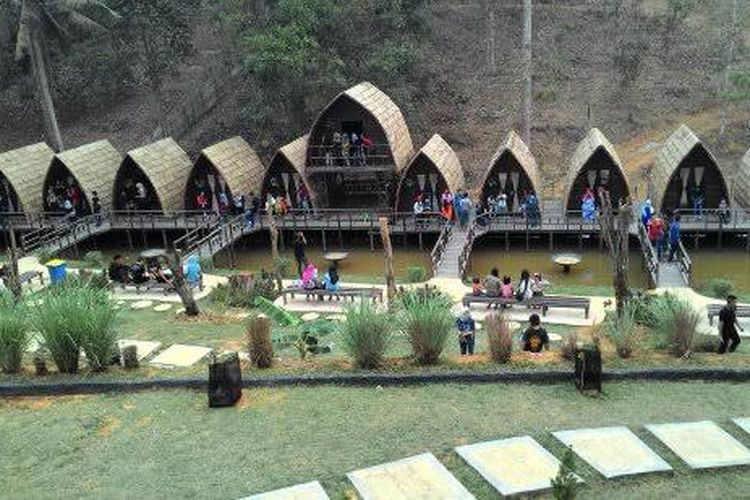
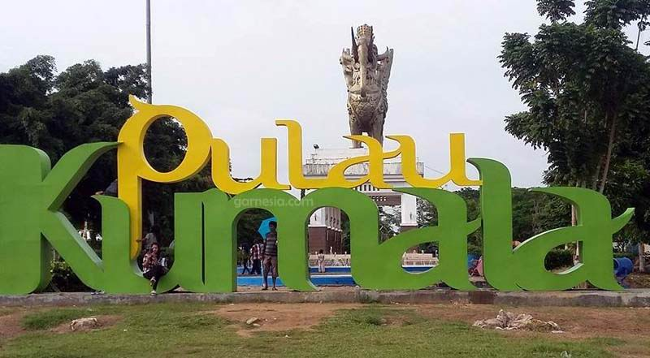

About SajiKukar
SajiKukar adalah sebuah platform daring yang menyajikan informasi lengkap tentang ragam kuliner makanan dan minuman yang tersedia di daerah Kutai Kartanegara. Dengan visi menjadi penunjuk arah utama bagi para pencinta makanan dan minuman, situs ini dirancang untuk memudahkan pengguna dalam menemukan, mengeksplorasi, dan menikmati berbagai pengalaman kuliner yang ditawarkan di wilayah tersebut.



